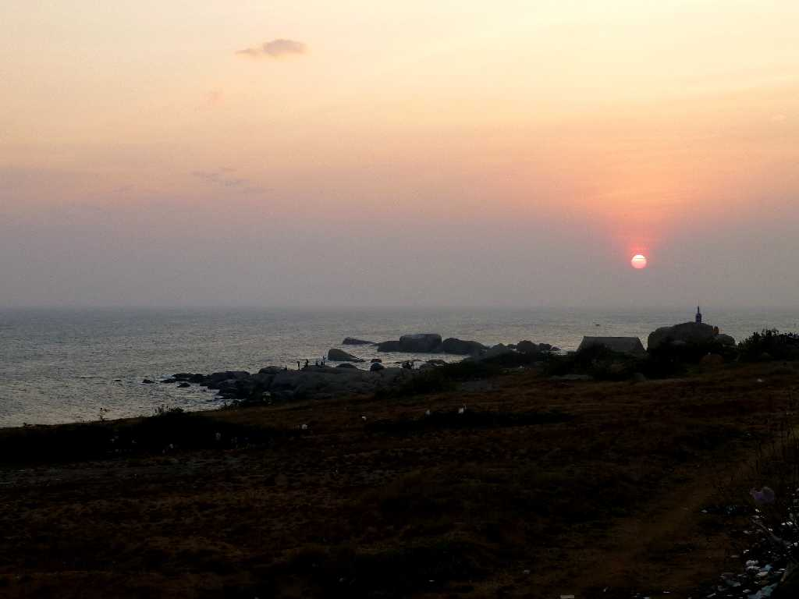
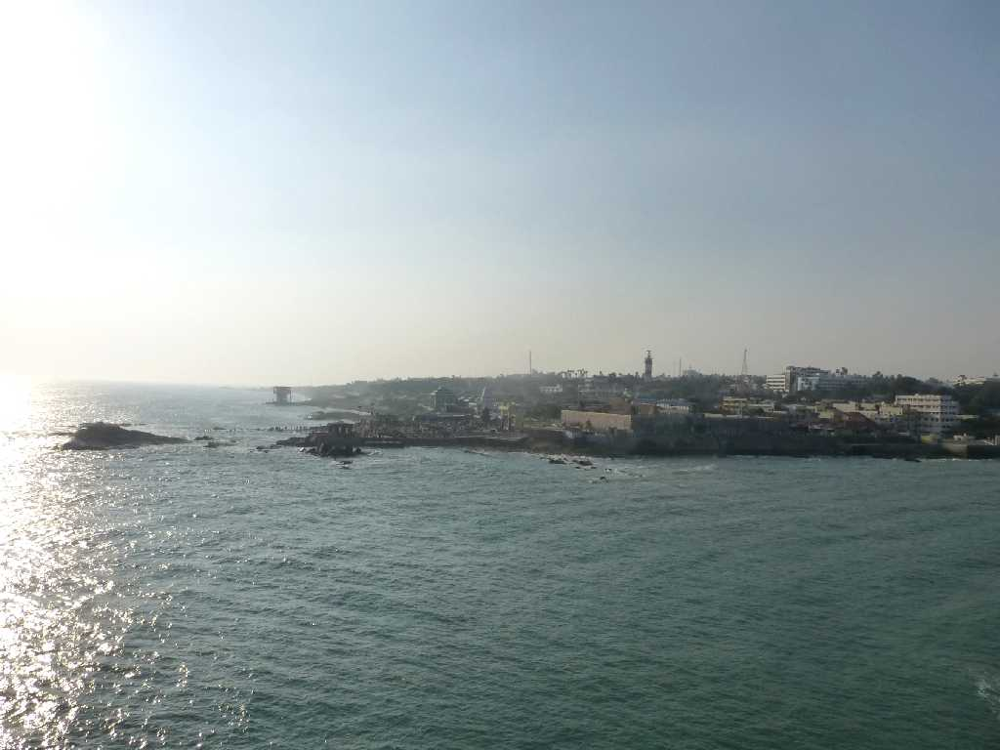
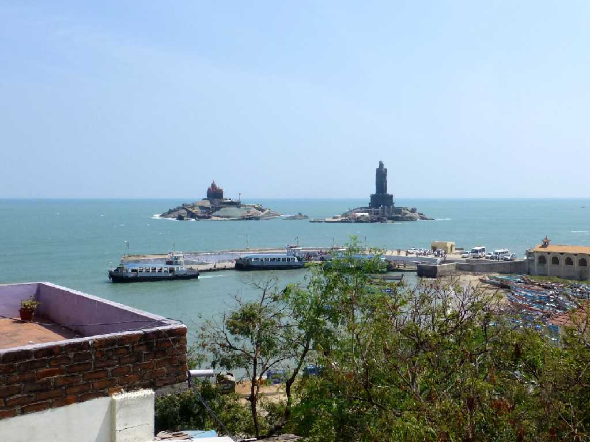
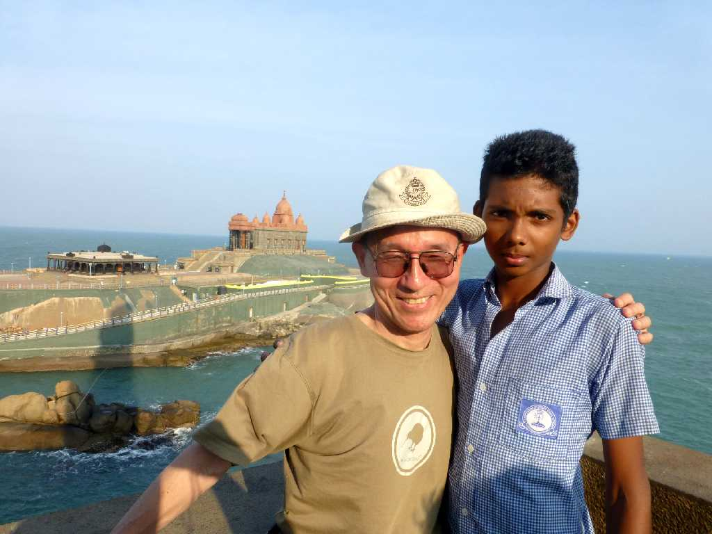
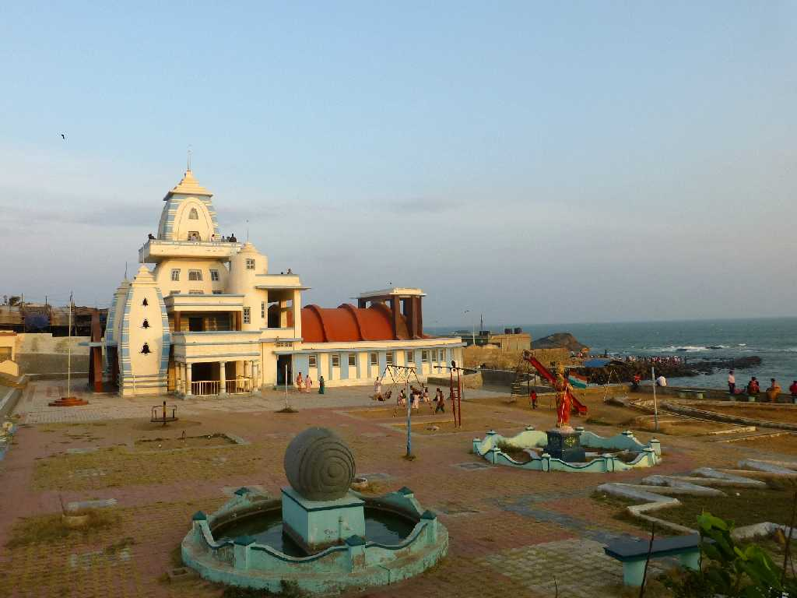

February 9 2015 18:23 Sunset Cape Comorin Kanyakumari
インド最南端のコモリン岬の日没

Cape Comorin from Thiruvalluvar Statue

Vivekananda Temple Thiruvalluvar Statue
Vivekananda Rock

February 9 2015 Vivekananda Temple from Thiruvalluvar Statue Vivekananda Rock

Gandhi Memorial Kanyakumari